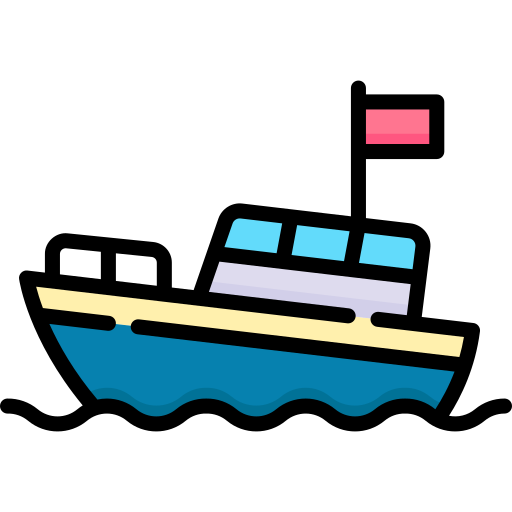

Monthly Developer Newsletter
March 2026 | By Kamron Sutherland
A Closer Look at Modern Web Development
Web development continues to evolve as new technologies improve how websites are designed and delivered to users. Through my coursework at the State College of Florida and independent coding practice, I have been developing a strong foundation in HTML and CSS. These technologies allow developers to structure content clearly while controlling layout, spacing, and visual design through cascading stylesheets.
One of the most valuable skills in web design is learning how an external stylesheet can manage the appearance of an entire website. Instead of styling each page individually, developers can apply consistent rules across multiple pages such as the home page, resume, portfolio, and newsletter. This approach makes websites easier to maintain while ensuring that the design remains consistent throughout the site.
Building Skills Through Real Projects
Developing complete websites has helped me understand how professional web pages are organized. Each page in this project uses a shared navigation structure, consistent header design, and a single cascading stylesheet that controls the layout and visual style. This type of organization mirrors how real websites are structured in professional environments.
As I continue learning web development, my goal is to expand this portfolio with additional projects and advanced techniques. Responsive design, user experience improvements, and clean code organization will continue to guide my development work as I move toward a professional career in the technology field.
Summary
Web development requires both technical skill and thoughtful design. Through coursework, practice projects, and continuous learning, I am building the skills needed to create functional and visually engaging websites. This newsletter will continue to highlight my progress as I expand my knowledge and develop new web projects.
Looking Ahead
As I continue to grow as a web developer, I plan to explore JavaScript frameworks, advanced CSS techniques, and accessibility best practices. Each new project will build on my current foundation, allowing me to create more dynamic, responsive, and user-friendly websites.
Tip: Continuously experimenting and learning new skills ensures every website you build is both functional and visually engaging!
By consistently applying these practices, I aim to prepare myself for a professional career in the tech industry while delivering high-quality, polished web projects.